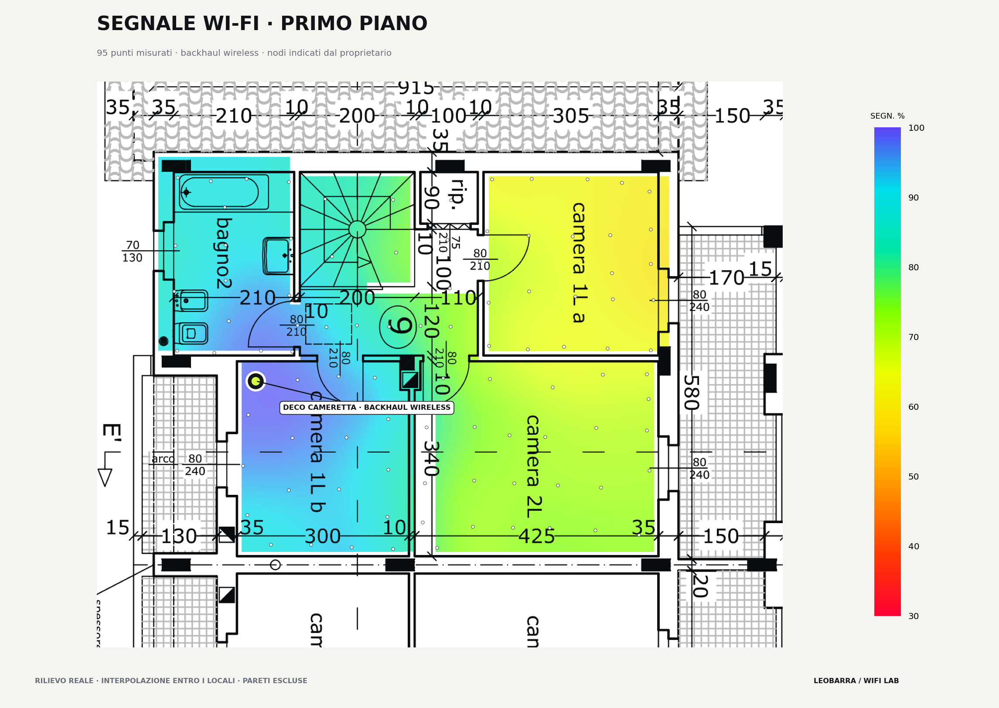
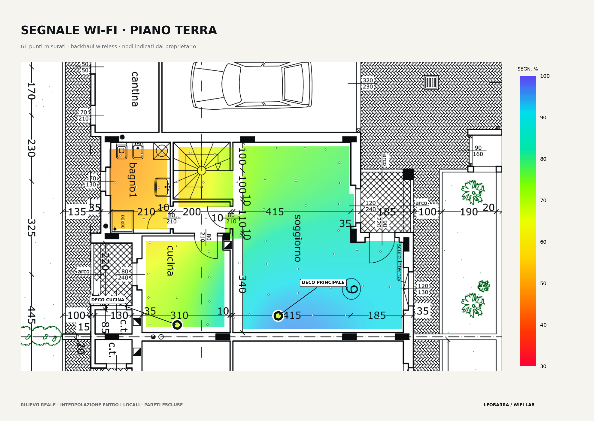
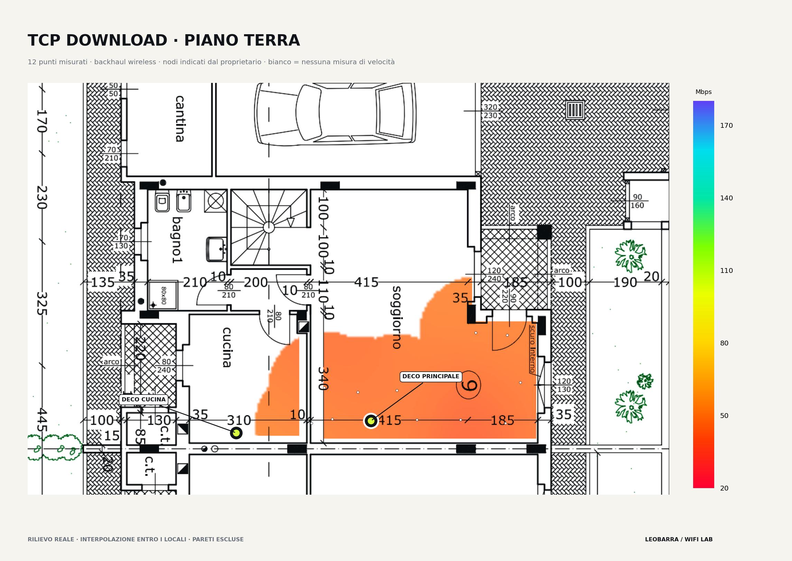
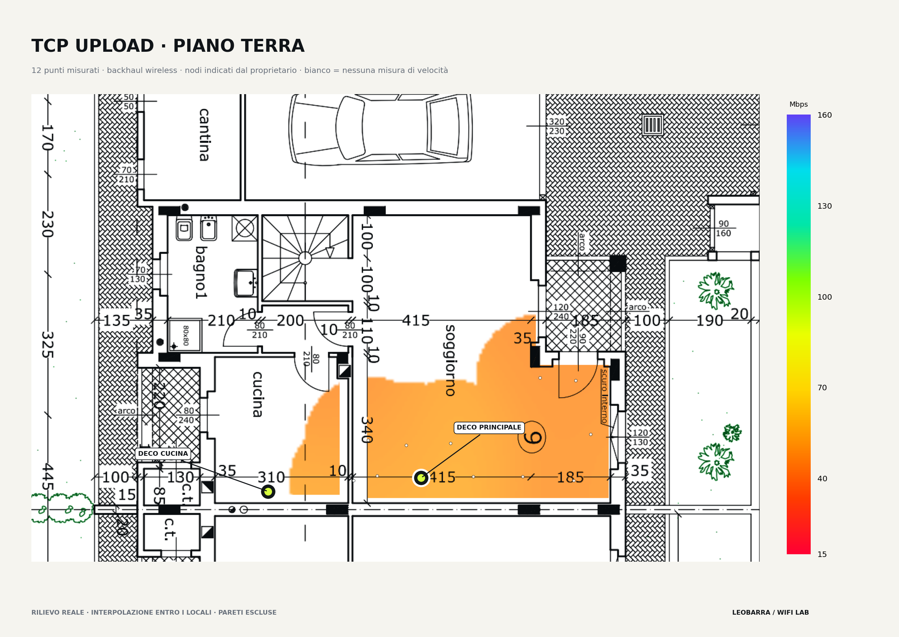
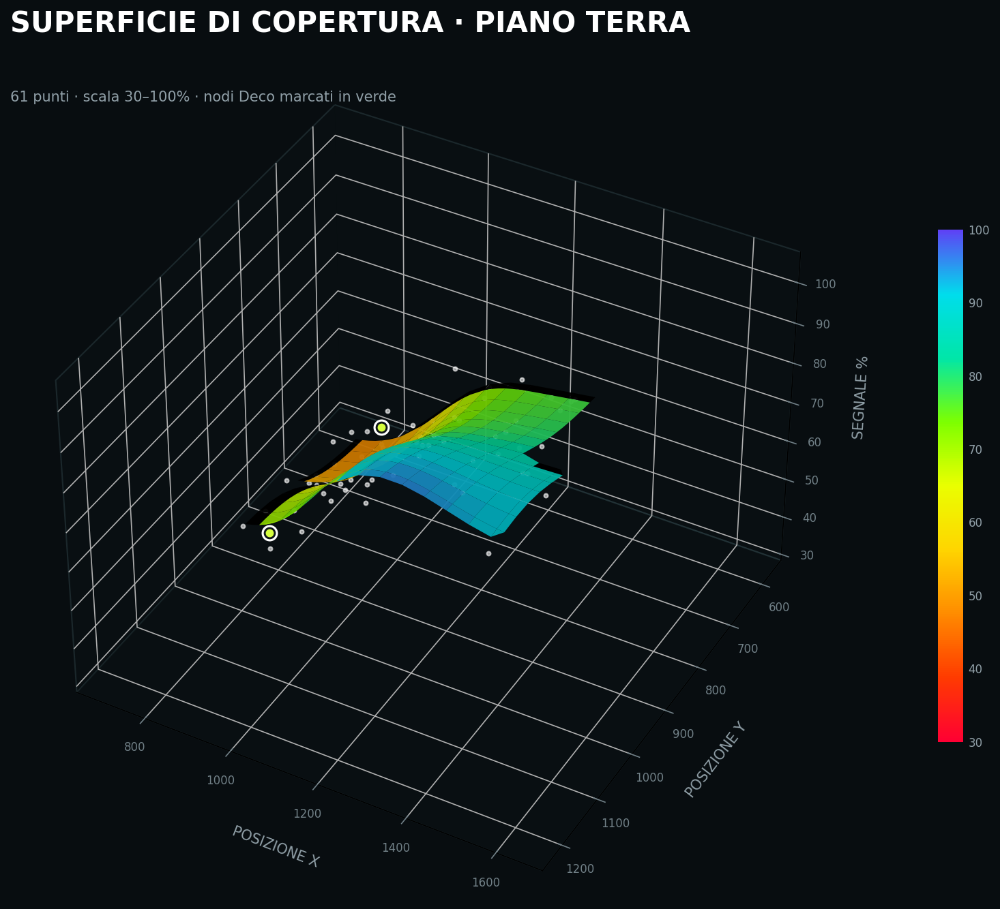
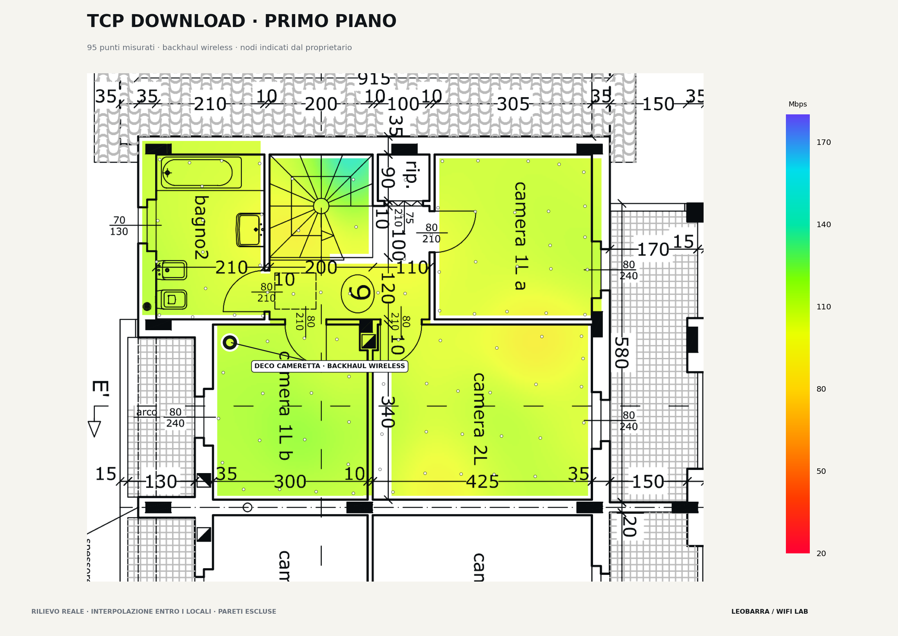
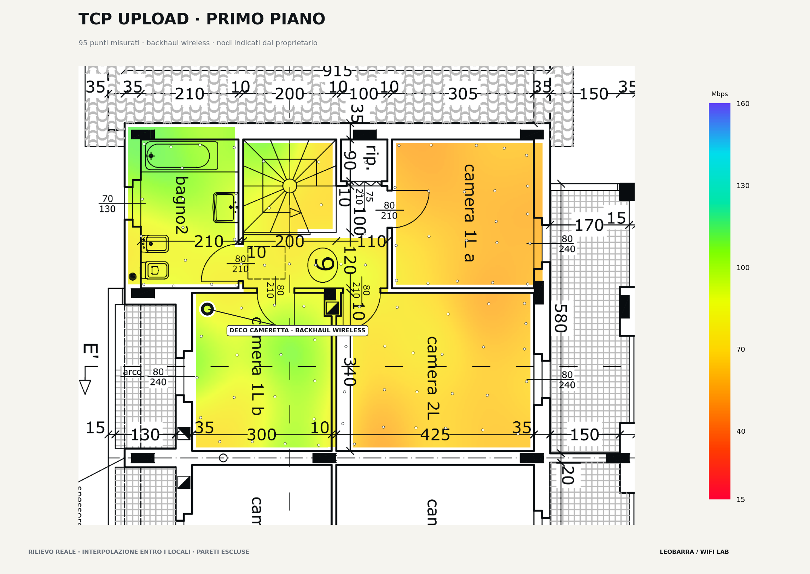
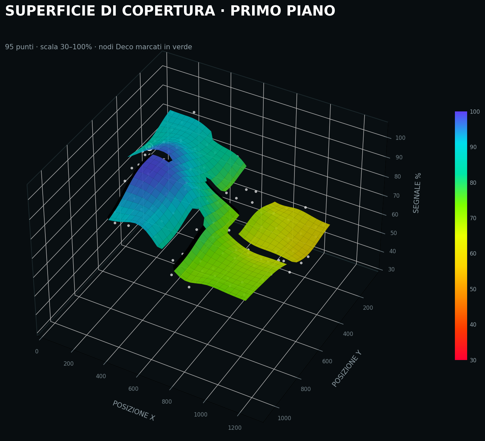

← MAKER LAB
Wi‑Fi
PROGETTO 001 · RETI / MISURE
Wi‑Fi
Heatmap.
Misurare davvero la rete mesh di casa: non soltanto le tacche del Wi‑Fi, ma segnale, TCP e UDP nello stesso punto.
2 PIANI RILEVATI156 PUNTIIPERF3MESH
NODE ANODE B
ANTEPRIMA CONCETTUALEdeboleforte
LA RETE DI CASA
Le piante vere.
I nodi noti.
Queste sono le planimetrie dei due piani rilevati, con i Deco segnati nei punti comunicati dal proprietario. Non sono una sezione architettonica: dalle piante non si può ricostruire fedelmente l'alzato della casa.
{kind=link}

{kind=link}

LIMITI DELLA RAPPRESENTAZIONE Le aree colorate sono misure interpolate, non raggi d'azione dei singoli Deco. Non abbiamo ancora una planimetria di garage e cantina: sono affiancati qui solo per indicare che si trovano allo stesso livello, senza inventarne la posizione precisa.
01 · IL SISTEMA
Dal click
al dato.
Il Mac misura nel punto esatto della planimetria. HomeHub risponde via iperf3: il test misura la LAN e può includere il backhaul wireless fra i nodi Deco, non la velocità di Internet.
02 · PRIME MISURE
Due punti.
Una domanda.
Queste furono le prime osservazioni; ora i due rilievi completi consentono di vedere la distribuzione del segnale e i limiti dei test di velocità.
PUNTO 27 · VICINO AL NODO−40 dBm
- TCP ↓
- 92.2 Mbps
- TCP ↑
- 68.4 Mbps
- UDP ↓ / ↑
- 100 / 100 Mbps
PUNTO 26 · DIAGONALE OPPOSTA−65 dBm
- TCP ↓
- 104.4 Mbps
- TCP ↑
- 59.4 Mbps
- UDP ↓ / ↑
- 100 / 87.6 Mbps
IPOTESI DA VERIFICARE Il segnale cambia molto, il throughput molto meno. Il collo di bottiglia potrebbe essere il backhaul wireless, non il collegamento tra Mac e nodo.
03 · RILIEVO PIANO TERRA
Piano terra.
61 misure.
Il rilievo comprende cucina, bagno, scala e soggiorno. I marcatori individuano il Deco principale (Point_7) e il Deco della cucina (Point_50), entrambi posizionati secondo le indicazioni del proprietario.
−55 dBm · 61 punti
mediana di soli 12 test
mediana di soli 12 test
principale + cucina
{kind=link}

{kind=link}


NODO CUCINA / GIARDINO
Il nodo vicino
non è sempre
quello usato.
Al Point_50, dove si trova il Deco della cucina, il Mac ha rilevato 67% / −60 dBm. Questo è compatibile con una permanenza sul nodo principale, ma il BSSID è oscurato da macOS: non possiamo attribuire con certezza la misura a un nodo. Il Deco cucina resta utile come possibile estensione verso il giardino; i rilievi interni non ne misurano ancora l’effetto esterno.
Le mappe sono interpolazioni dei campioni reali, limitate alle aree rilevate e tenute all’interno dei muri. I valori TCP del piano terra non descrivono l’intera superficie.04 · RILIEVO COMPLETO
Primo piano.
95 misure.
Segnale e throughput misurati punto per punto con HomeHub come server iperf3, collegato via Ethernet a un nodo Deco con backhaul wireless. La colorazione è confinata all’interno dei locali: le pareti restano escluse dall’interpolazione.
−54 dBm
mediana del piano
mediana del piano
backhaul wireless
{kind=link}

{kind=link}


COSA DICONO I DATI
Il segnale cambia.
Il download quasi no.
Tra le stanze il segnale mediano varia da 62% a 94,5%, ma il download TCP mediano rimane compreso fra 105,6 e 112,0 Mbps. L’upload è più sensibile: scende a circa 59,4 Mbps nella Camera 1L a, la zona più lontana.
Le mappe descrivono un rilievo reale ma interpolato: non simulano matematicamente l’attenuazione dei singoli muri. Il Deco della cameretta (Point_119) usa ancora un backhaul wireless: sarà il candidato principale per il confronto prima/dopo il cablaggio.05 · PROTOCOLLO
Stesso punto.
Stesse regole.
Solo una misura ripetibile permette di capire se cablare il backhaul cambia davvero la rete.
- 01Baseline completa
20–30 punti per piano come minimo; 40–60 per una mappa più leggibile.
- 02Geometria costante
Stessa altezza, orientamento del Mac, apertura dello schermo e durata del test.
- 03Backhaul Ethernet
Collegare i nodi mesh via cavo senza cambiare la posizione dei punti.
- 04Secondo passaggio
Ripetere la griglia e confrontare segnale, TCP, UDP e stabilità punto per punto.
- 05Rendering finale
Heatmap 2D per piano, confronto prima/dopo e superficie 3D della copertura.
06 · HARDWARE NECESSARIO
Il carrello
di misura.
Non è un accessorio: serve a spostare il Mac velocemente e, soprattutto, a mantenerlo sempre nella stessa geometria.
70–90 cm altezza costante4 ruote almeno due bloccabiliNON METALLICO vicino alle antenneORIENTAMENTO e apertura fissiANTISCIVOLO per il MacRIPIANO BASSO per batteria e accessori
MAC
posizione fissaPOWER / KITCONCEPT · DA PROGETTARE
posizione fissaPOWER / KITCONCEPT · DA PROGETTARE
07 · PROSSIMI OUTPUT
Heatmap RSSI
Dove il segnale degrada sui due piani.
Heatmap TCP/UDP
Dove la rete è realmente veloce e stabile.
Prima / dopo
Effetto misurabile del backhaul cablato.
Vista 3D
Una superficie di copertura leggibile, non soltanto una tabella.